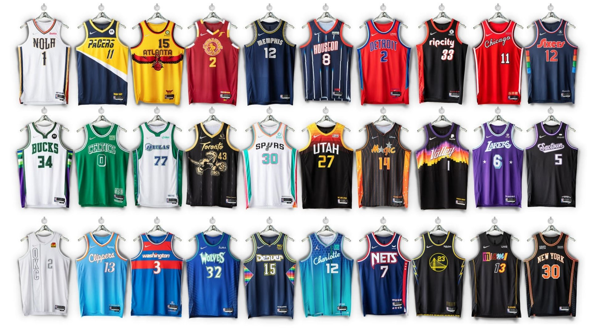
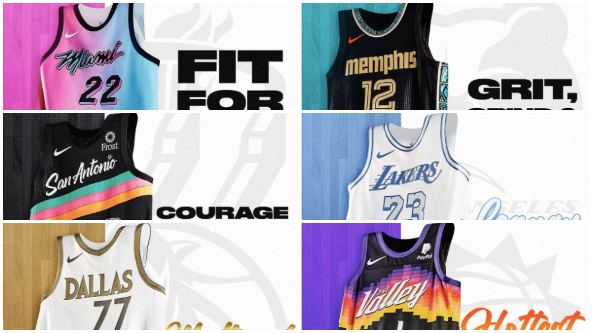
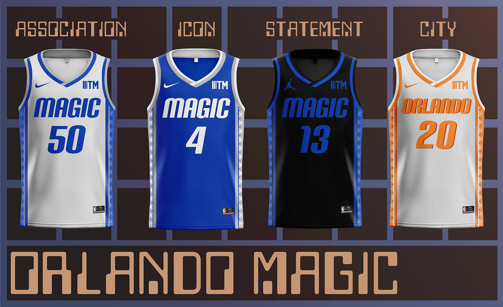
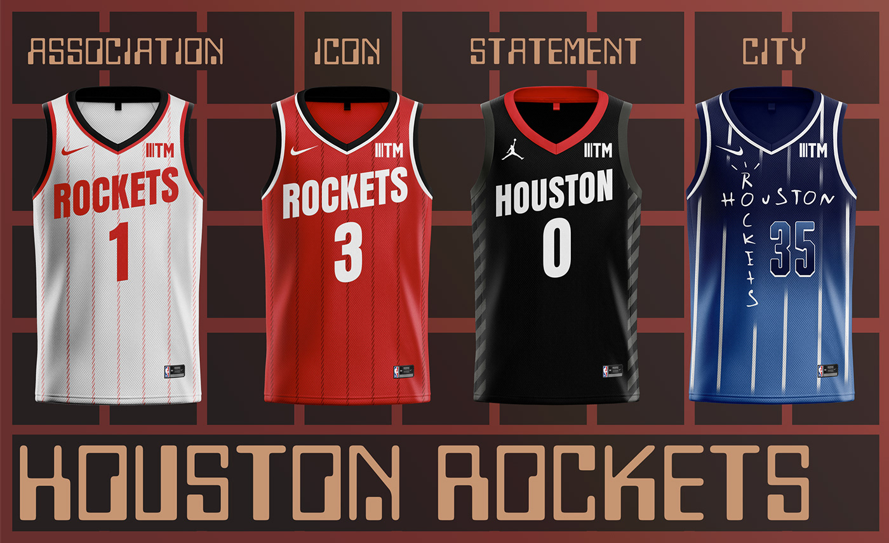
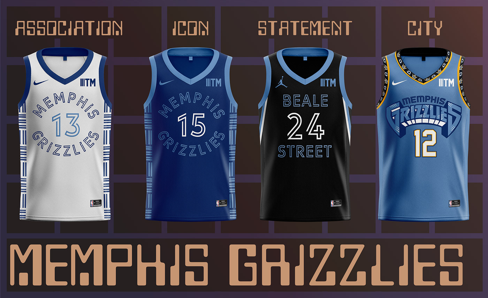
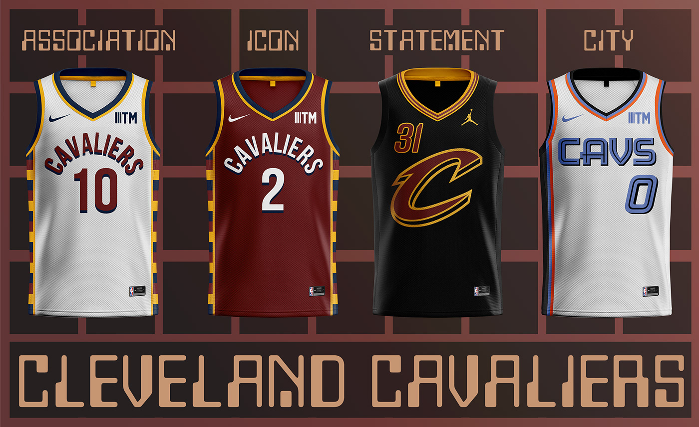
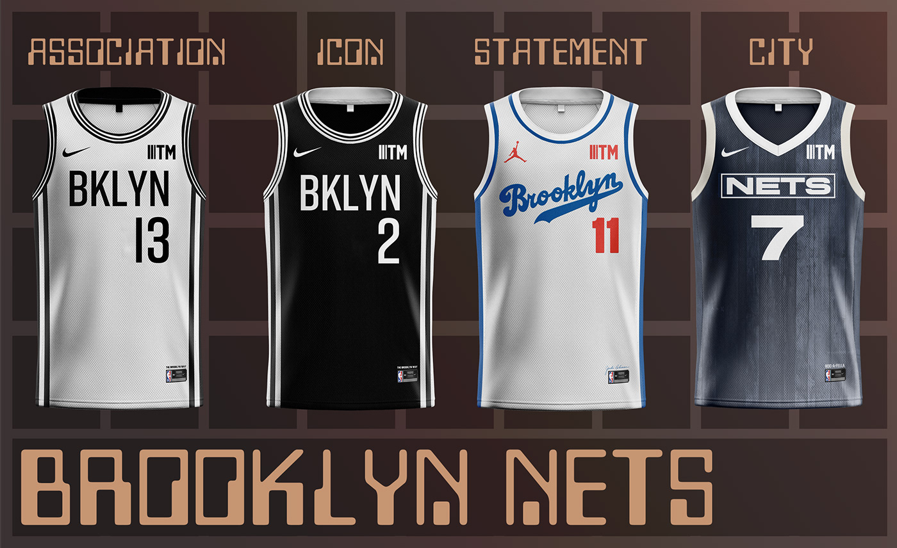

Todas las camisetas "City Edition" de la temporada 2021-2022 de la NBA: ¿Cuál es la mejor?
Los equipos de la NBA han presentado los nuevos modelos de sus equipaciones alternativas, hay para todos los gustos y aquí las presentamos. Una serie de camisetas con un toque histórico en honor al 75 aniversario. ¿Con cuál se quedan?
La temporada 2021-2022 de la NBA va a ser una de las más importantes de los últimos años. Y no solo por la igualdad entre los principales equipos candidatos al anillo, sino porque supone el 75 aniversario del inicio de la competición en 1946. Un amplio espacio de tiempo a lo largo del cual se han producido algunos de los momentos más épicos de la historia del deporte norteamericano, han surgido mitos y se han forjado las leyendas del juego. Es por ello que las 30 franquicias han querido rendir tributo a su pasado con unas camisetas especiales conmemorativas, es decir, las City Edition de la campaña 2021-2022
Cada uniforme City Edition 2021-22 representa la mezcla de los mejores momentos del baloncesto: una recopilación de los mayores éxitos de la franquicia a lo largo de los años en cada diseño. Más allá de algunos de los elementos de diseño más obvios, los uniformes incluyen muchos toques sutiles ("easter eggs") que resaltan momentos cruciales de la historia de cada equipo. Cada uniforme Nike NBA City Edition 2021-22 cuenta con una colección integrada de Game Theater y, para muchos conjuntos, un diseño de la cancha que proporciona la plataforma definitiva para exhibir las equipaciones.
💎 NBA Diamond Album Drops TODAY 💎
— NBA (@NBA) November 1, 2021
Unveiling the 2021-22 Nike NBA City Edition jerseys #NBA75 pic.twitter.com/9dC6FYvefa
"Los momentos incluidos en las camisetas de las City Edition abarcan décadas y recuerdan a los fans, antiguos y nuevos, algunos de los mejores recuerdos de sus equipos favoritos", dijo Christopher Arena, director de asociaciones de marca y en la cancha de la NBA. "La temporada del 75 aniversario nos brindó una oportunidad única de trabajar junto a los equipos y a Nike para dar vida a la rica historia de la liga, mostrando el fandom de cada equipo de una manera realmente especial".
"Los uniformes Nike NBA City Edition de este año ayudan a impulsar la celebración de la temporada del 75 aniversario de la liga", añadió Aaron Cain, vicepresidente/gerente general de NIKE. "Cada camiseta cuenta una historia, yuxtaponiendo lo antiguo y lo nuevo para crear un inolvidable mira y siente para esta temporada histórica. El resultado no es solo una carta de amor al juego. Es una celebración del fandom y una invitación a una nueva generación".
     